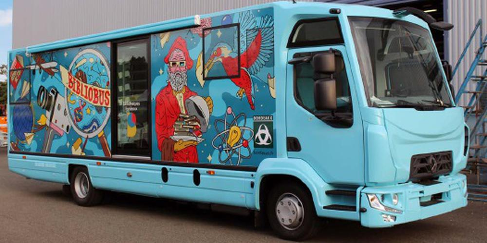

PROJETS
Contexte
Le projet Bibliobus est une initiative visant à moderniser l'accès aux livres dans des zones rurales grâce à des solutions numériques. Il s'agit d'une réponse innovante aux défis de la lecture dans des zones peu desservies. Ce projet se compose de deux parties : une application client lourd pour la gestion interne et une application web connectée à une API pour une accessibilité en ligne.
N'hésitez pas à consulter mon LinkedIn, vous pourrez aussi y trouver des explications !
Projet 1 : Application Client Lourd
L'application client lourd permet au bibliothécaire de gérer les livres en local, en ajoutant ou supprimant des livres dans la base de données. Elle propose également des fonctionnalités de gestion des collections, des lecteurs, et des emprunts directement depuis un poste de travail dédié.

Projet 2 : Application Web
Le projet web, connecté à une API, offre aux utilisateurs la possibilité de consulter le catalogue des livres disponibles, de réserver des ouvrages, et de suivre leurs emprunts en ligne. Ce système étend l'accessibilité au-delà des frontières géographiques.